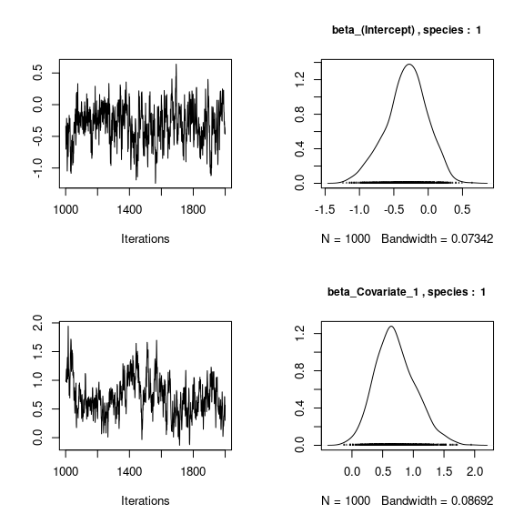
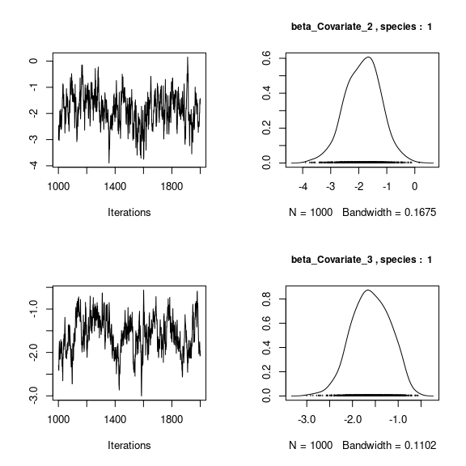
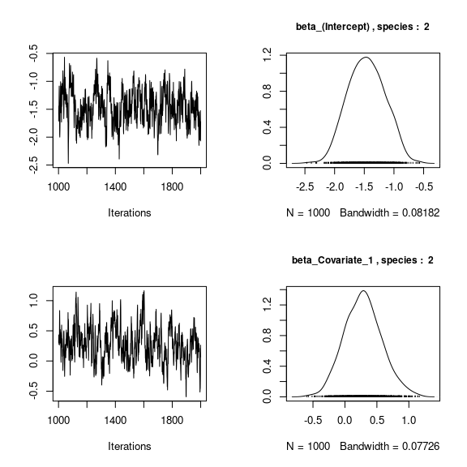
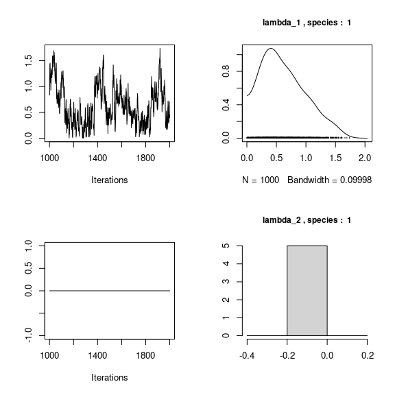
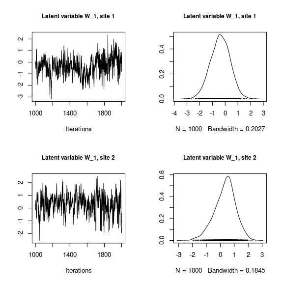
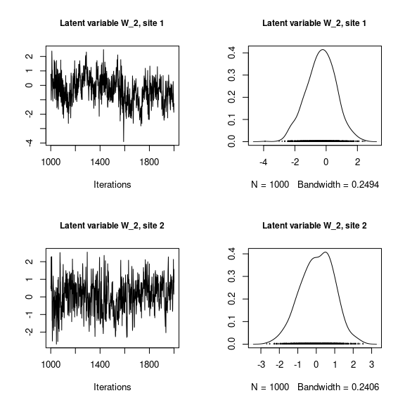
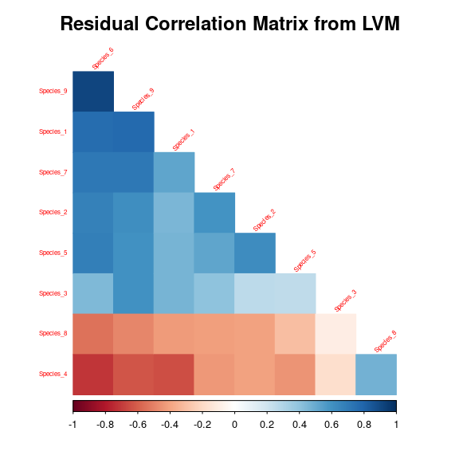
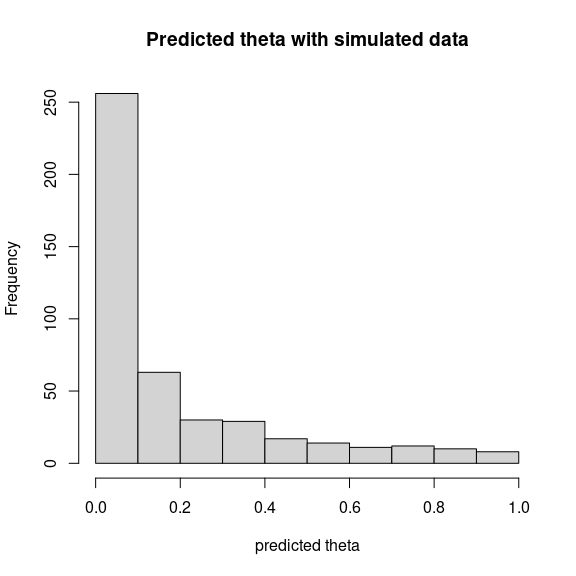

1 jSDM package
jSDM is an R package for fitting joint species distribution models (jSDM) in a hierarchical Bayesian framework.
The Gibbs sampler is written in C++. It uses Rcpp, Armadillo and GSL to maximize computation efficiency.
| Package: | jSDM |
|---|---|
| Type: | Package |
| Version: | 0.1.1 |
| Date: | 2019-01-11 |
| License: | GPL-3 |
| LazyLoad: | yes |
The package includes the following functions to fit various species distribution models :
| function | data-type |
|---|---|
‘jSDM_binomial_logit’ |
presence-absence |
‘jSDM_binomial_probit_block’ |
presence-absence |
‘jSDM_poisson_log’ |
abundance |
- ‘
jSDM_binomial_probit_block’ :
Ecological process:
\[y_{ij} \sim \mathcal{B}inomial(\theta_{ij},t_i),\] where
| conditions | model specification |
|---|---|
if ‘n_latent=0’ and ‘site_effect="none"’ |
probit\((\theta_{ij}) = \beta_{0j} + X_i \beta_j\) |
if ‘n_latent>0’ and ‘site_effect="none"’ |
probit\((\theta_{ij}) = \beta_{0j} + X_i \beta_j + W_i \lambda_j\) |
if ‘n_latent=0’ and ‘site_effect="random"’ |
probit\((\theta_{ij}) = \beta_{0j} + X_i \beta_j + \alpha_i\) and \(\alpha_i \sim \mathcal{N}(0,V_\alpha)\) |
if ‘n_latent>0’ and ‘site_effect="fixed"’ |
probit\((\theta_{ij}) = \beta_{0j} + X_i \beta_j + W_i \lambda_j + \alpha_i\) |
if ‘n_latent=0’ and ‘site_effect="fixed"’ |
probit\((\theta_{ij}) = \beta_{0j} + X_i \beta_j + \alpha_i\) |
if ‘n_latent>0’ and ‘site_effect="random"’ |
probit\((\theta_{ij}) = \beta_{0j} + X_i \beta_j + W_i \lambda_j + \alpha_i\) and \(\alpha_i \sim \mathcal{N}(0,V_\alpha)\) |
- ‘
jSDM_binomial_logit’ :
Ecological process :
\[y_{ij} \sim \mathcal{B}inomial(\theta_{ij},t_i),\] where
| conditions | model specification |
|---|---|
if ‘n_latent=0’ and ‘site_effect="none"’ |
logit\((\theta_{ij}) = \beta_{0j} + X_i \beta_j\) |
if ‘n_latent>0’ and ‘site_effect="none"’ |
logit\((\theta_{ij}) = \beta_{0j} + X_i \beta_j + W_i \lambda_j\) |
if ‘n_latent=0’ and ‘site_effect="fixed"’ |
logit\((\theta_{ij}) = \beta_{0j} + X_i \beta_j + \alpha_i\) |
if ‘n_latent>0’ and ‘site_effect="fixed"’ |
logit\((\theta_{ij}) = \beta_{0j} + X_i \beta_j + W_i \lambda_j + \alpha_i\) |
if ‘n_latent=0’ and ‘site_effect="random"’ |
logit\((\theta_{ij}) = \beta_{0j} + X_i \beta_j + \alpha_i\) and \(\alpha_i \sim \mathcal{N}(0,V_{\alpha})\) |
if ‘n_latent>0’ and ‘site_effect="random"’ |
logit\((\theta_{ij}) = \beta_{0j} + X_i \beta_j + W_i \lambda_j + \alpha_i\) and \(\alpha_i \sim \mathcal{N}(0,V_\alpha)\) |
- ‘
jSDM_poisson_log’ :
Ecological process :
\[y_{ij} \sim \mathcal{P}oisson(\theta_{ij}),\]
where
| conditions | model specification |
|---|---|
if ‘n_latent=0’ and ‘site_effect="none"’ |
log\((\theta_{ij}) = \beta_{0j} + X_i \beta_j\) |
if ‘n_latent>0’ and ‘site_effect="none"’ |
log\((\theta_{ij}) = \beta_{0j} + X_i \beta_j + W_i \lambda_j\) |
if ‘n_latent=0’ and ‘site_effect="fixed"’ |
log\((\theta_{ij}) = \beta_{0j} + X_i \beta_j + \alpha_i\) |
if ‘n_latent>0’ and ‘site_effect="fixed"’ |
log\((\theta_{ij}) = \beta_{0j} + X_i \beta_j + W_i \lambda_j + \alpha_i\) |
if ‘n_latent=0’ and ‘site_effect="random"’ |
log\((\theta_{ij}) = \beta_{0j} + X_i \beta_j + \alpha_i\) and \(\alpha_i \sim \mathcal{N}(0,V_\alpha)\) |
if ‘n_latent>0’ and ‘site_effect="random"’’ |
log\((\theta_{ij}) = \beta_{0j} + X_i \beta_j + W_i \lambda_j + \alpha_i\) and \(\alpha_i \sim \mathcal{N}(0,V_\alpha)\) |
Joint Species distribution models (jSDM) are useful tools to explain or predict species range and abundance from various environmental factors and species correlations (Warton et al. 2015). jSDM is becoming an increasingly popular statistical method in conservation biology.
In this vignette, we illustrate the use of the jSDM R package wich aims at providing user-friendly statistical functions using field observations (occurence or abundance data) to fit jSDMs models.
Package’s functions are developped in a hierarchical Bayesian framework and use adaptive rejection Metropolis sampling algorithms or conjugate priors within Gibbs sampling to estimate model’s parameters. Using compiled C++ code for the Gibbs sampler reduce drastically the computation time. By making these new statistical tools available to the scientific community, we hope to democratize the use of more complex, but more realistic, statistical models for increasing knowledge in ecology and conserving biodiversity.
Model types available in jSDM are not limited to those described in this example. jSDM includes various model types for occurrence and abundance data:
We first load the jSDM library.
# Load libraries library(jSDM) #> ## #> ## jSDM R package #> ## For joint species distribution models #> ## https://ecology.ghislainv.fr/jSDM #> ##
2 Bernoulli probit regression
Below, we show an example of the use of jSDM for fitting species distribution model to occurence data for 9 frog’s species.
2.1 Definition of the model
Referring to the models used in the articles Warton et al. (2015) and Albert & Siddhartha (1993), we define the following model :
\[ \mathrm{probit}(\theta_{ij}) =\alpha_i + \beta_{0j}+X_i.\beta_j+ W_i.\lambda_j \]
Link function probit: \(\mathrm{probit}: q \rightarrow \Phi^{-1}(q)\) where \(\Phi\) correspond to the repartition function of the reduced centred normal distribution.
Response variable: \(Y=(y_{ij})^{i=1,\ldots,nsite}_{j=1,\ldots,nsp}\) with:
\[y_{ij}=\begin{cases} 0 & \text{ if species $j$ is absent on the site $i$}\\ 1 & \text{ if species $j$ is present on the site $i$}. \end{cases}\]
- Latent variable \(z_{ij} = \alpha_i + \beta_{0j} + X_i.\beta_j + W_i.\lambda_j + \epsilon_{i,j}\), with \(\forall (i,j) \ \epsilon_{ij} \sim \mathcal{N}(0,1)\) and such that:
\[y_{ij}=\begin{cases} 1 & \text{if} \ z_{ij} > 0 \\ 0 & \text{otherwise.} \end{cases}\]
It can be easily shown that: \(y_{ij} \sim \mathcal{B}ernoulli(\theta_{ij})\).
Latent variables: \(W_i=(W_i^1,\ldots,W_i^q)\) where \(q\) is the number of latent variables considered, which has to be fixed by the user (by default q=2). We assume that \(W_i \sim \mathcal{N}(0,I_q)\) and we define the associated coefficients: \(\lambda_j=(\lambda_j^1,\ldots, \lambda_j^q)'\). We use a prior distribution \(\mathcal{N}(0,10)\) for all lambdas not concerned by constraints to \(0\) on upper diagonal and to strictly positive values on diagonal.
Explanatory variables: bioclimatic data about each site. \(X=(X_i)_{i=1,\ldots,nsite}\) with \(X_i=(x_i^1,\ldots,x_i^p)\in \mathbb{R}^p\) where \(p\) is the number of bioclimatic variables considered. The corresponding regression coefficients for each species \(j\) are noted : \(\beta_j=(\beta_j^1,\ldots,\beta_j^p)'\).
\(\beta_{0j}\) correspond to the intercept for species \(j\) which is assume to be a fixed effect. We use a prior distribution \(\mathcal{N}(0,10^6)\) for all betas.
\(\alpha_i\) represents the random effect of site \(i\) such as \(\alpha_i \sim \mathcal{N}(0,V_{\alpha})\) and we assumed that \(V_{\alpha} \sim \mathcal {IG}(\text{shape}=0.5, \text{rate}=0.005)\) as prior distribution by default.
2.2 Occurrence data-set

Figure 2.1: Litoria ewingii (Wilkinson et al. 2019).
This data-set is available in the jSDM R package. It can be loaded with the data command. The } dataset is in “wide” format: each line is a site and the occurrence data (from Species_1 to Species_9) are in columns. A site is characterized by its x-y geographical coordinates, one discrete covariate and two other continuous covariates.
# frogs data data(frogs, package="jSDM") head(frogs) #> Covariate_1 Covariate_2 Covariate_3 Species_1 Species_2 Species_3 Species_4 #> 1 3.870111 0 0.045334 1 0 0 0 #> 2 3.326950 1 0.115903 0 0 0 0 #> 3 2.856729 1 0.147034 0 0 0 0 #> 4 1.623249 1 0.124283 0 0 0 0 #> 5 4.629685 1 0.081655 0 0 0 0 #> 6 0.698970 1 0.107048 0 0 0 0 #> Species_5 Species_6 Species_7 Species_8 Species_9 y x #> 1 0 0 0 0 0 66.41479 9.256424 #> 2 0 1 0 0 0 67.03841 9.025588 #> 3 0 1 0 0 0 67.03855 9.029416 #> 4 0 1 0 0 0 67.04200 9.029745 #> 5 0 1 0 0 0 67.04439 9.026514 #> 6 0 0 0 0 0 67.03894 9.023580
We rearrange the data in two data-sets: a first one for the presence-absence observations for each species (columns) at each site (rows), and a second one for the site characteristics.
We also normalize the continuous explicative variables to facilitate MCMC convergence.
2.3 Parameter inference
We use the jSDM_binomial_probit_block() function to fit the jSDM (increase the number of iterations to achieve convergence).
mod_frogs_jSDM_probit <- jSDM_binomial_probit_block( # Chains burnin=1000, mcmc=1000, thin=1, # Response variable presence_site_sp = PA_frogs, # Explanatory variables site_suitability = ~., site_data = Env_frogs, # Model specification n_latent=2, site_effect="random", # Starting values alpha_start=0, beta_start=0, lambda_start=0, W_start=0, V_alpha=1, # Priors shape=0.1, rate=0.1, mu_beta=0, V_beta=100, mu_lambda=0, V_lambda=10, # Various seed=1234, verbose=1) #> #> Running the Gibbs sampler. It may be long, please keep cool :) #> #> **********:10.0% #> **********:20.0% #> **********:30.0% #> **********:40.0% #> **********:50.0% #> **********:60.0% #> **********:70.0% #> **********:80.0% #> **********:90.0% #> **********:100.0%
2.4 Analysis of the results
np <- nrow(mod_frogs_jSDM_probit$model_spec$beta_start) ## beta_j of the first two species par(mfrow=c(np,2)) for (j in 1:2) { for (p in 1:np) { coda::traceplot(coda::as.mcmc(mod_frogs_jSDM_probit$mcmc.sp[[paste0("sp_",j)]][,p])) coda::densplot(coda::as.mcmc(mod_frogs_jSDM_probit$mcmc.sp[[paste0("sp_",j)]][,p]), main = paste(colnames(mod_frogs_jSDM_probit$mcmc.sp[[paste0("sp_",j)]])[p], ", species : ",j)) } }

## lambda_j of the first two species n_latent <- mod_frogs_jSDM_probit$model_spec$n_latent par(mfrow=c(n_latent*2,2)) for (j in 1:2) { for (l in 1:n_latent) { coda::traceplot(coda::as.mcmc(mod_frogs_jSDM_probit$mcmc.sp[[paste0("sp_",j)]][,np+l])) coda::densplot(coda::as.mcmc(mod_frogs_jSDM_probit$mcmc.sp[[paste0("sp_",j)]][,np+l]), main = paste(colnames(mod_frogs_jSDM_probit$mcmc.sp[[paste0("sp_",j)]]) [np+l],", species : ",j)) } }

## Latent variables W_i for the first two sites par(mfrow=c(2,2)) for (l in 1:n_latent) { for (i in 1:2) { coda::traceplot(mod_frogs_jSDM_probit$mcmc.latent[[paste0("lv_",l)]][,i], main = paste0("Latent variable W_", l, ", site ", i)) coda::densplot(mod_frogs_jSDM_probit$mcmc.latent[[paste0("lv_",l)]][,i], main = paste0("Latent variable W_", l, ", site ", i)) } }

## V_alpha par(mfrow=c(2,2)) coda::traceplot(mod_frogs_jSDM_probit$mcmc.V_alpha) coda::densplot(mod_frogs_jSDM_probit$mcmc.V_alpha) ## Deviance coda::traceplot(mod_frogs_jSDM_probit$mcmc.Deviance) coda::densplot(mod_frogs_jSDM_probit$mcmc.Deviance)

## probit_theta par (mfrow=c(2,1)) hist(mod_frogs_jSDM_probit$probit_theta_pred, main = "Predicted probit theta", xlab ="predicted probit theta") hist(pnorm(mod_frogs_jSDM_probit$probit_theta_pred), main = "Predicted theta", xlab ="predicted theta")

2.5 Matrice of correlations
After fitting the jSDM with latent variables, the fullspecies residual correlation matrix \(R=(R_{ij})^{i=1,\ldots, nspecies}_{j=1,\ldots, nspecies}\) can bederived from the covariance in the latent variables such as : \[\Sigma_{ij} = \begin{cases} \lambda_i .\lambda_j^T & \text{ if } i \neq j \\ \lambda_i .\lambda_j^T + 1 & \text{ if } i=j \end{cases}\], then we compute correlations from covariances : \[R_{i,j} = \frac{\Sigma_{ij}}{\sqrt{\Sigma _{ii}\Sigma _{jj}}}\].
plot_residual_cor(mod_frogs_jSDM_probit)

2.6 Predictions
We use the predict() S3 method on the mod_frogs_jSDM_probit object of class jSDM to compute the mean (or expectation) of the posterior distributions obtained and get the expected values of model’s parameters.
# Sites and species concerned by predictions : ## 50 sites among the 104 Id_sites <- sample.int(nrow(PA_frogs), 50) ## All species Id_species <- colnames(PA_frogs) # Simulate new observations of covariates on those sites simdata <- matrix(nrow=50, ncol = ncol(mod_frogs_jSDM_probit$model_spec$site_data)) colnames(simdata) <- colnames(mod_frogs_jSDM_probit$model_spec$site_data) rownames(simdata) <- Id_sites simdata <- as.data.frame(simdata) simdata$Covariate_1 <- rnorm(50) simdata$Covariate_3 <- rnorm(50) simdata$Covariate_2 <- rbinom(50,1,0.5) # Predictions theta_pred <- predict(mod_frogs_jSDM_probit, newdata=simdata, Id_species=Id_species, Id_sites=Id_sites, type="mean") hist(theta_pred, main="Predicted theta with simulated data", xlab="predicted theta")

References
Albert, J.H. & Siddhartha, C. (1993) Bayesian analysis of binary and polychotomous response data. Journal of the American Statistical Association, 88, 669–679.
Warton, D.I., Blanchet, F.G., O’Hara, R.B., Ovaskainen, O., Taskinen, S., Walker, S.C. & Hui, F.K. (2015) So many variables: Joint modeling in community ecology. Trends in Ecology & Evolution, 30, 766–779.
Wilkinson, D.P., Golding, N., Guillera-Arroita, G., Tingley, R. & McCarthy, M.A. (2019) A comparison of joint species distribution models for presence-absence data. Methods in Ecology and Evolution, 10, 198–211.